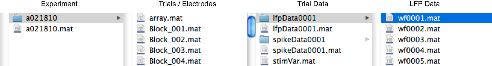

| On this page… |
|---|
The HDS Toolbox stores data accross multiple files in an organized folder structure. The structure is based on the hiarchy of the objects and their associates saving behavior. An object (or an array of objects) is stored in a '.mat' file. Any objects that are linked within this object are either stored in the same file or in a folder with the same name as the object file. For example, in the figure below, the 'Experiment' object 'a091809' contains multiple 'Trial' objects which in turn contain objects of class 'LFPData', 'SpikeData' and 'StimVar' data. The Experiment object also contains an 'Array' object which contains electrode information but does not contain any linked objects.

As the user requests various objects by indexing dynamic properties of an object, the HDS Toolbox loads the objects from file into memory. To access the first object in the tree, one should use the HDSLoad method. This method loads and initializes the object for subsequent accessing of other objects. It is possible to load any HDS object using this method so it is not required to start with the topmost object of the complete dataset. During initialization, the path of the object will be stored in a hidden transient property "path". This means that the database can be accesed from any location because only the relative paths between the objects matter for correct functioning of the Toolbox.
It is possible to load anyy object using the standard 'open' function in Matlab or by double clicking it in the browser. However, this bypasses all initialization steps and greatly disencouraged.
Initialization occurs whenever the HDS Toolbox loads an object in memory; it involves a couple of steps which are visualized in the flowchart below. The object on disk is checked whether it complies with the latest class versions and updated if needed. Next, the path to the object is stored in the object and a pointer to the parent of the object is stored in the the object. These steps ensure that changes changes in the class definitions can be made without corrupting the saved data and relates the loaded object to the other objects in memory.
When class definitions are changes such that the object can no longer be loaded correctly, Matlab returns a structure which will subsequently be parsed as an object using the Struct2Obj method. This method tries to populate the object with the saved data. Any properties that cannot be parsed into an object will be stored in a transient property ('UNMATCHED_PROPS'). This can be the case if, for example, some properties are deleted from the classdefinition. The 'UNMATCHED_PROPS' property is transient which means that any information that is located in this property will be lost whenever the object is saved and reloaded. Use the update functions to handle these situations.
The Save method saves the object and all objects that are dynamically linked to the object. A [*] symbol indicates that the contents of an object have been changed. The HDS Toolbox automatically registers when changes have been made and only save the objects when necessary. The first time a data tree is saved, the user will be asked to specify a location for the database. See the Save method for detailed information.
It is possible to copy part of the database to a different (local) location for analysis. This can be useful when the complete data tree is stored at a network storage drive and you only need the data for a particular experiment. In this case you can just copy the data of the one experiment and its linked classes to a local drive and access the data as if the experiment was the topmost object of the datatree. It is necessary to invoke the Declarehost method to inform the HDS Toolbox of this change.
However, it is NOT possible to make changes to this local datatree and copy them back to the original data tree. Doing this will corrupt the data tree as the Declarehost method changes the object-id numbers.
|
|
About the HDS-Toolbox | Example 1 |
|
© 2009-2010 J.B.M. Wagenaar • Terms of Use • Acknowledgments